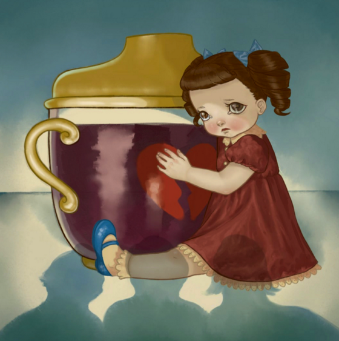

Sippy Cup

Sippy Cup é uma música alternativa de Dollhouse que mostra uma visão mais profunda do que realmente acontece na vida pessoal e familiar de Cry Baby.
Os MVs das duas músicas exemplificam a família, pois em Dollhouse, a mãe de Cry Baby aparece embriagada no chão, em seguida o marido dela,
também embriagado, entra em casa com uma mulher desconhecida que também está bêbada. No clipe de Sippy Cup, o marido e a amante começam a dançar juntos enquanto a esposa dele se levanta e esta, quando percebe a traição do marido,
mata ele e sua amante. Quando Cry Baby desce das escadas e descobre os corpos, sua mãe agarra ela, algema ela na cama e envenena ela com clorofórmio em um copo infantil.
Significado Aprofundado da Música
Em "Sippy Cup", Melanie usa a metáfora do copo infantil para mostrar como problemas graves, como o alcoolismo, são frequentemente disfarçados por aparências inocentes.
"syrup is still syrup in a sippy cup" (xarope ainda é xarope em um copo infantil): Frase repetida que destaca que, mesmo escondendo o álcool em um objeto infantil, o conteúdo prejudicial não muda. Isso mostra a hipocrisia e negação presentes em lares disfuncionais. onde se tenta mascarar questões sérias com soluçòes superficiais.
"he's still dead when you're done with the bottle / of course it's a corpse that you keep in the cradle" (ele ainda está morto quando você termina a garrafa / claro que é um cadáver que você mantém no berço): Versos que abordam temas como alcoolismo, infidelidade e violência doméstica.
A cena do assasinato do marido e de sua amante pela esposa no MV ilustra o impacto dos traumas familiares e a tentativa de escondê-los.
"kids are still depressed when you dress them up" (crianças ainda estão deprimidas quando você as veste bem) e "all the makeup in the world won't make you less insecure" (toda a maquiagem do mundo não vai te deixar menos insegura): Versos que criticam a busca por soluções superficiais para problemas profundos.